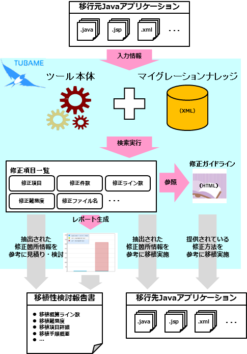

TUBAMEってなに？
TUBAMEはJavaアプリケーションのマイグレーション時に必要となる、修正箇所の抽出や修正工数の算出を自動で行うためのツールです。
自動化により作業工数の削減や人的ミスの防止が可能となり、加えてコミュニティで蓄積されたマイグレーションに関わるノウハウを提供しているため作業精度の向上にも役立ちます。
TUBAMEを使うメリットは？
商用製品からOSS製品へのマイグレーションや製品のバージョンアップを検討する作業は高い精度の見積りが重要です。
TUBAMEではアプリケーションのソースコードや設定ファイルを入力として、マイグレーション先の環境では利用できない箇所を自動で抽出します。
さらに、移植に必要なノウハウ(修正工数や修正方法などの情報)を提供しているため、見積り時の精度向上に役立ちます。
どうやって修正箇所を探すの？
TUBAMEは修正箇所を自動で検索するためのツール本体とは別に、修正箇所を検索するためのキーワードや修正工数、修正難易度などをまとめたマイグレーションナレッジを提供しています。
ナレッジを切替えることにより、多様な移行パターンに対応することができます。
現在、コミュニティで提供しているナレッジの一覧を こちらで確認できます。
実際に実行するときのインプット／アウトプットは？
TUBAMEはツール本体とマイグレーションナレッジを使用して修正箇所の抽出や修正工数の算出を行います。
移行元のJavaアプリケーションを入力情報として検索を実行すると、修正項目の一覧が得られます。
また、修正方法や修正方針などをまとめた修正ガイドラインを修正項目一覧から参照できたり、レポートを自動で生成することができます。
